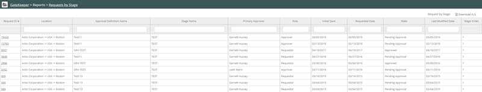

The Requests by Stage report displays requests you made and includes the stage of the approval process.
To run a Report:
Click the Gatekeeper Main menu. From Reports, select Requests by Stage.
The report displays. Click Download XLS to download the report in Excel format.

Requests by Stage report columns:
Request ID—Clicking the ID number displays the request form.
* Product Name—The product name as stated in the Safety Data Sheet (SDS).
* Manufacturer Name—The manufacturer's name.
Location—The location for which the request was made
Approval Definition Name—The approval definition maps the request and approval forms to the location.
Stage Name—The approval stage.
Primary Approver—The name of the primary approver.
Role—The role of the primary approver.
Initial Save—The initial date that the request was made or saved.
Requested Date—The date you requested the product.
State—The state of the request: not submitted (created and saved for future submission), awaiting approval, approved and declined.
Last Modified Date—The date the request was last modified.
Stage Order—The order of the approval stage.
Note: * Fields with an asterisk are included in the XLS download file.